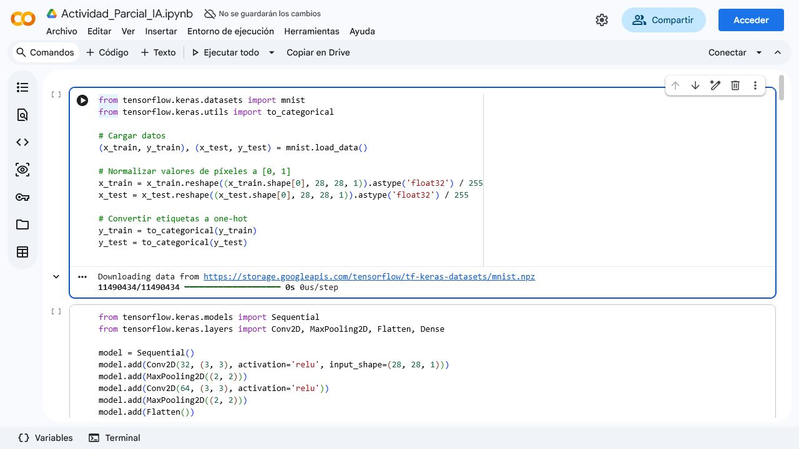
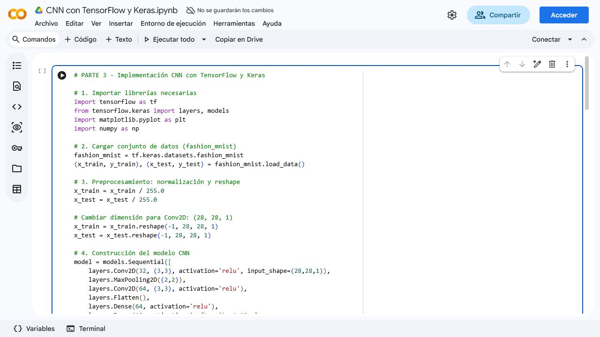
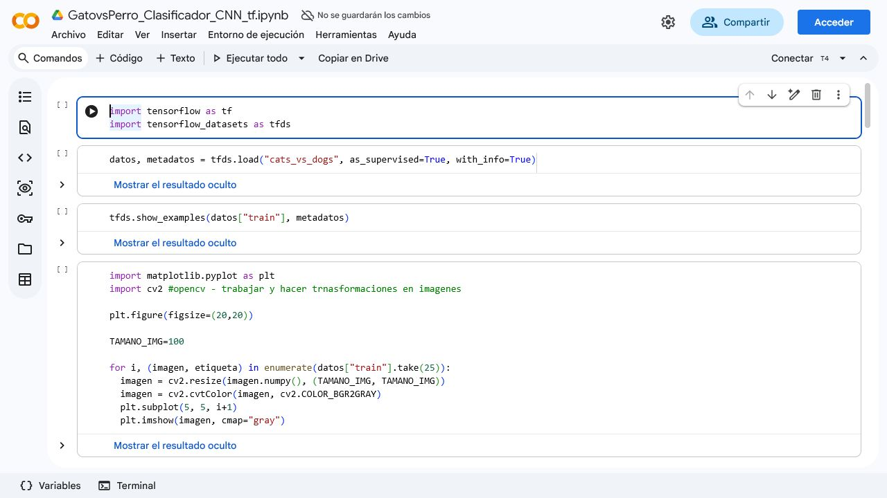
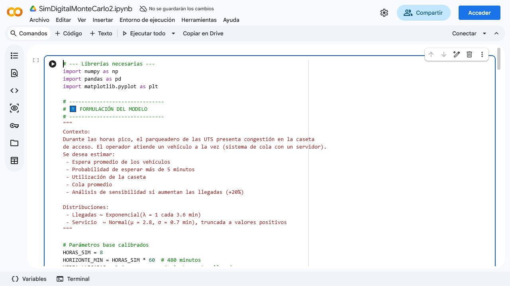
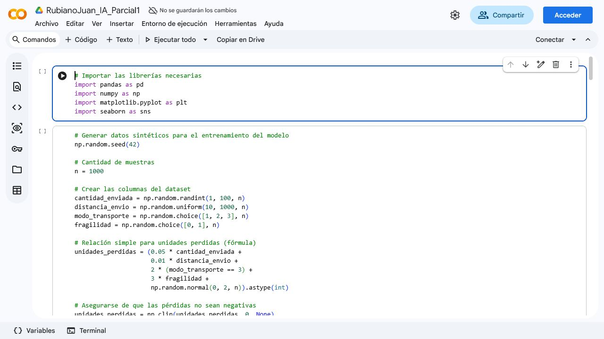
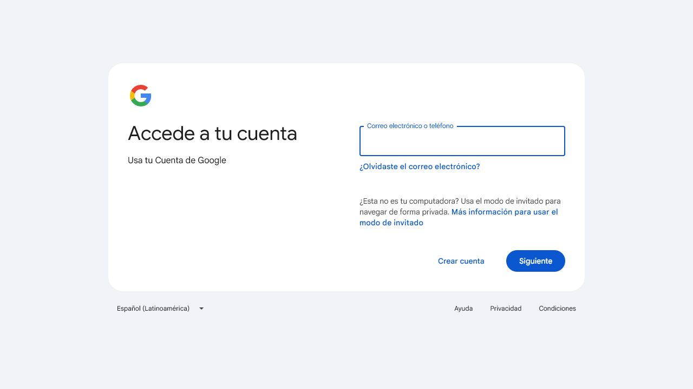

Machine learning / datos / simulacion
Coleccion de casos ML del portfolio.
Este espacio agrupa ejercicios que fui desarrollando en Python y Colab sobre vision por computador, audio, mineria de datos, simulacion financiera y modelos predictivos. Cada caso busca explicar con claridad el problema, el flujo tecnico y lo que demuestra sobre mis habilidades.
Lo que vas a encontrar
CNN
Audio
KMeans
Monte Carlo
La coleccion mezcla ejercicios de exploracion, prototipos guiados y experimentos personales. Algunos se enfocan en prediccion, otros en exploracion y otros en interpretacion de senales o decisiones.
Vision
MNIST, CIFAR-10, cats vs dogs
Audio
MFCC, FFT, pitch, espectrograma
Datos
KNN, regresion, ART2, portafolios
Curaduria del contenido
Como se organizo esta coleccion.
No todo esta presentado como un archivo crudo. Cada caso resume el objetivo, el dataset o insumo, el pipeline tecnico, la lectura de resultados y el tipo de capacidad que ayuda a evidenciar.
Fidelidad al recorrido real
Cada pagina parte de ejercicios y prototipos existentes, reorganizados para mostrar mejor el criterio tecnico detras del trabajo.
Lectura mas profesional
El foco no esta solo en el resultado: tambien queda claro el problema, el pipeline y la habilidad concreta que evidencia cada caso.
Navegacion mas limpia
Desde este indice se puede abrir cada caso documentado y, cuando aplica, revisar tambien el cuaderno original trabajado en Colab.
Casos
Casos documentados para revisar proceso, criterio y resultados.
Puedes abrir cada caso como pagina independiente. Cuando hay enlace publico disponible, tambien queda visible el acceso directo al cuaderno de Colab para revisar celdas, resultados y archivos.

Vision por computador
Clasificador CNN de numeros manuscritos
MNIST como caso principal y una lectura separada de la extension visual incluida en el mismo archivo base.
TensorFlow
CNN
MNIST
Vision por computador
Clasificacion visual con MNIST y CIFAR-10
Un flujo que une digitos manuscritos y un segundo ejercicio visual en CIFAR-10 para airplane, automobile y truck.
MNIST
CIFAR-10
Augmentation
AU
Audio
Analisis de audio con MFCC y FFT
Comparacion entre guitarra y flauta, mas lectura de espectro de frecuencias sobre una senal de voz.
librosa
MFCC
FFT

CNN multiclase
CIFAR-10 filtrado: automobile, ship y truck
Clasificacion entre automobile, ship y truck usando una CNN pequena con conjunto de validacion.
CIFAR-10
Validation split
Accuracy

Senales
Espectrograma y rasgos de una onda de audio
Extraccion de pitch, volumen, MFCC, duracion, FFT, forma de onda y espectrograma logaritmico.
Pitch
RMS
Spectrogram

Clasificacion binaria
Gatos vs perros con CNN
Pipeline con TensorFlow Datasets, conversion a escala de grises y pruebas con imagenes cargadas manualmente.
Cats vs Dogs
Sigmoid
Custom test

Finanzas
Simulacion de portafolios con Monte Carlo
Markowitz, Monte Carlo, diversificacion, escenarios moderado y conservador, y proyeccion con aportes mensuales.
yfinance
Monte Carlo
Portafolios

Prediccion
Prediccion de perdidas logisticas
Dataset sintetico para estimar unidades perdidas y comparar regresion lineal contra arbol de decision.
pandas
Regression
MAE / MSE

Mineria de datos
Laboratorio de clustering, regresion, KNN y ART2
Un recorrido por varias tecnicas de analitica y aprendizaje a partir de datasets sinteticos.
KMeans
KNN
ART2